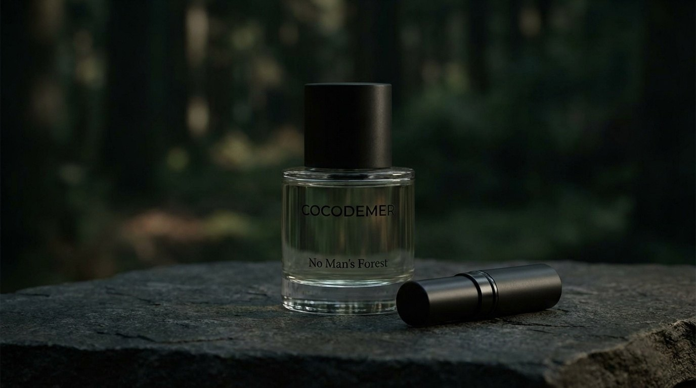
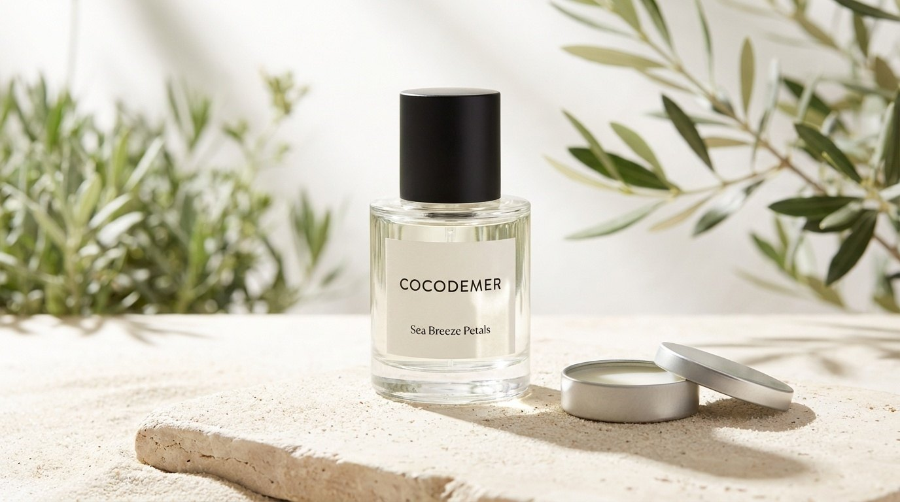

FRAGRANCE
One Forest, Multiple States
하나의 숲, 여러 개의 상태
하나의 숲이 가진 여러 상태를 후각으로 기록합니다. 숲은 고정되지 않습니다. 아침의 숲, 사람이 떠난 후의 숲, 바다 바람이 스며든 숲 — 각각은 같은 장소이지만 완전히 다른 감각을 남깁니다. 코코드메르의 향은 "누구를 위한 것인가"가 아니라 "어떤 상태인가"를 표현합니다.
Seychelles Memory
첫 번째 접촉의 순간입니다. 숲이 피부에 처음 닿았을 때의 온기와 기억을 담습니다.
No Man's Forest
고요의 상태입니다. 사람이 떠난 후 더 선명해지는 숲의 본질을 표현합니다.
Sea Breeze Petals
움직임의 상태입니다. 바다 바람이 숲 경계를 흔들 때의 공기감과 호흡을 그립니다.
세이셸의 코코 드 메르 숲
코코드메르는 세이셸 제도에 실존하는 코코 드 메르 숲을 기억의 출발점으로 삼습니다. 세계에서 가장 큰 씨앗을 가진 야자나무가 자라는 곳으로, 고립되고 원시적이며 신성한 공간입니다.
브랜드는 이 숲을 방문하는 것이 아니라, 그 안에 머무르는 경험을 향으로 번역합니다.
세 가지 상태

Seychelles Memory
숲이 처음 피부를 감쌌던 순간을 담습니다.
코코넛은 건조하고 목질적입니다. 단맛이 아니라 숲의 공기와 섞이는 질감으로, 나무의 결이 피부 위에 정착합니다. 재스민과 바이올렛의 플로럴은 장식이 아니라 숲 속에 은밀하게 존재하는 식물의 숨결이며, 그린 노트가 공기 중의 수분과 잎의 결을 전달합니다.
| TOP | Coconut |
|---|---|
| MIDDLE | Violet, Jasmine, Green notes |
| BASE | Amber, Musk, Sandalwood, Cedarwood, Patchouli |

No Man's Forest
사람이 떠난 후에도, 숲은 그대로 남아 있습니다.
빛이 흐려지고 소리가 사라지지만 나무와 공기, 그리고 향은 오히려 더 또렷해집니다. 이 향에는 탑 노트가 없습니다. 첫인상의 화려함을 배제하고 미들과 베이스가 처음부터 피부 위에 존재하도록 설계한 의도적인 구조입니다.
| TOP | 없음 — 의도적 배제 |
|---|---|
| MIDDLE | Iris, Eucalyptus, Green notes |
| BASE | Amber, Musk, Sandalwood, Cedarwood, Vanilla |

Sea Breeze Petals
바다 바람이 숲의 경계를 스치고, 꽃잎이 공기 속에서 조용히 움직입니다.
라임과 레몬의 시트러스 탑 노트가 바다에서 불어온 바람의 시원함을 전합니다. 그린 노트와 뮤게, 네롤리, 유칼립투스의 미들은 숲과 바다의 경계에서 일어나는 미세한 흔들림을 포착합니다.
| TOP | Lime, Lemon |
|---|---|
| MIDDLE | Green notes, Muguet, Neroli, Eucalyptus |
| BASE | Musk, Amber, Cedarwood |
두 가지 제형
Eau de Parfum
- 알코올 베이스의 전통적인 오 드 퍼퓸
- 확산성과 지속력이 균형 잡힌 농도
- 공기 중으로 퍼지며 공간에 조용한 흔적을 남깁니다
Solid Perfume
- 알코올 프리 고형 제형
- 피부에 직접 밀착되어 향이 은밀하게 지속
- 휴대 가능한 용기, 언제든 재도포 가능
- 가까이 다가온 이에게만 감지되는 친밀한 경험
Quiet Luxury · Niche Fragrance
코코드메르는 단순히 향수를 파는 것이 아니라, "숲을 기억하는 방법"을 제안합니다.
"같은 숲, 다른 상태"라는 독창적 콘셉트
성별과 계절을 넘어선 향의 철학
스킨케어 기반 브랜드의 신뢰성
오 드 퍼퓸과 고형 향수, 두 제형의 조화
절제된 언어와 미학
프래그런스 컬렉션은 출시 준비 중입니다. 유통·샘플 문의는 B2B 문의를 이용해 주십시오.
B2B 문의